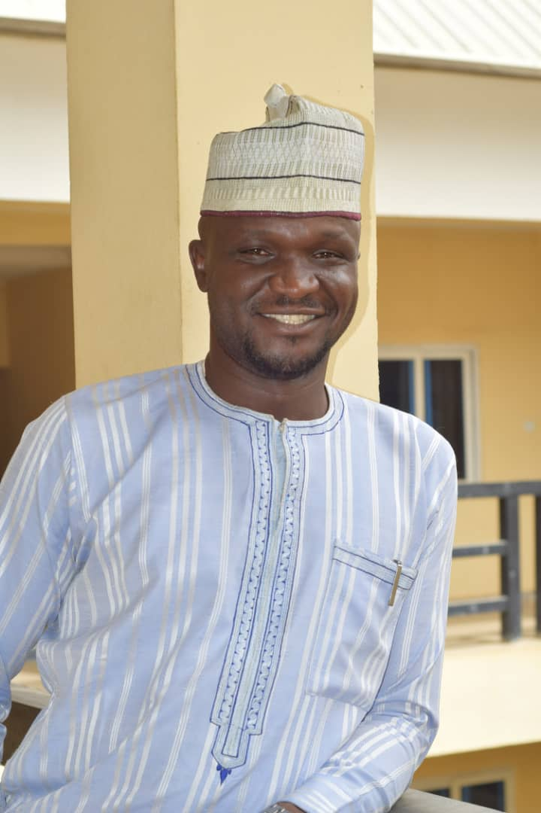

I am a Computer Engineer with over eight (8) years’ experience in the Tech Support and Education industry, handling projects and providing IT Support in areas such as Networking, Network security, End user IT Support and maintenance(Hardware and Software), Web development, Training, Electronic Learning and IT Project Management.
I obtained a Bachelor of engineering degree in Electrical and Electronic Engineering with second class honors from Madonna University Anambra state in August 2008. I have worked at Zaria Academy as a Network Administrator, Public Relations Officer and Technical Officer Zaria Academy digital learning center. I have also worked as a center administrator for Zaria Academy CBT center. I currently work as a Computer Engineer and Web administrator at Veritas University, Abuja. I also volunteer as Head of IT for Anti-Suicide global initiative (ASGI) here in Abuja.
I am very passionate about sharing knowledge so in addition to my responsibilities at Veritas University, I organize periodic training for staff and students in areas such as; Productivity tools (Word, Excel, PowerPoint, SPSS), electronic mail services (Microsoft outlook and Zimbra), Internet and Intranet, Wi-Fi and wireless technology and Video Conferencing technologies. In addition to this I am also a course instructor for the Internet and Computing Core Certification, Global Standards 4 and 5. I am a highly motivated self-starter, who is very open to new experiences and learning new skills.